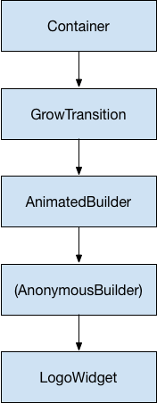

Tutorial: Animations in Flutter
What you’ll learn:
- How to use the fundamental classes from the animation library to add animation to a widget.
- When to use AnimatedWidget vs. AnimatedBuilder.
This tutorial shows you how to build animations in Flutter. After introducing some of the essential concepts, classes, and methods in the animation library, it walks you through 5 animation examples. The examples build on each other, introducing you to different aspects of the animation library.
Essential animation concepts and classes
What’s the point?
- The Animation object, a core class in Flutter’s animation library, interpolates the values used to guide an animation.
- The Animation object knows the current state of an animation (for example, whether it’s started, stopped, or moving forward or in reverse), but doesn’t know anything about what appears onscreen.
- An AnimationController manages the Animation.
- A CurvedAnimation defines progression as a non-linear curve.
- A Tween interpolates between the range of data as used by the object being animated. For example, a Tween might define an interpolation from red to blue, or from 0 to 255.
- Use Listeners and StatusListeners to monitor animation state changes.
The animation system in Flutter is based on typed
Animation
objects. Widgets can either incorporate these animations in their build
functions directly by reading their current value and listening to their
state changes or they can use the animations as the basis of more elaborate
animations that they pass along to other widgets.
Animation<double>
In Flutter, an Animation object knows nothing about what is onscreen. An Animation is an abstract class that understands its current value and its state (completed or dismissed). One of the more commonly used animation types is Animation<double>.
An Animation object in Flutter is a class that sequentially generates interpolated numbers between two values over a certain duration. The output of an Animation object may be linear, a curve, a step function, or any other mapping you can devise. Depending on how the Animation object is controlled, it could run in reverse, or even switch directions in the middle.
Animations can also interpolate types other than double, such as Animation<Color> or Animation<Size>.
Animation object has state. Its current value is always available
in the .value member.
An Animation object knows nothing about rendering or build() functions.
CurvedAnimation
A CurvedAnimation defines the animation’s progress as a non-linear curve.
final CurvedAnimation curve =
new CurvedAnimation(parent: controller, curve: Curves.easeIn);CurvedAnimation and AnimationController (described in the next section) are both of type Animation<double>, so you can pass them interchangeably. The CurvedAnimation wraps the object it’s modifying—you don’t subclass AnimationController to implement a curve.
AnimationController
AnimationController is a special Animation object that generates a new value whenever the hardware is ready for a new frame. By default, an AnimationController linearly produces the numbers from 0.0 to 1.0 during a given duration. For example, this code creates an Animation object, but does not start it running:
final AnimationController controller = new AnimationController(
duration: const Duration(milliseconds: 2000), vsync: this);AnimationController derives from Animation<double>, so it can be used
wherever an Animation object is needed. However, the AnimationController
has additional methods to control the animation. For example, you start
an animation with the .forward() method. The generation of numbers is
tied to the screen refresh, so typically 60 numbers are generated per
second. After each number is generated, each Animation object calls the
attached Listener objects. To create a custom display list for each
child, see
RepaintBoundary.
When creating an AnimationController, you pass it a vsync argument.
The presence of vsync prevents offscreen animations from consuming
unnecessary resources. You can use your stateful object as the vsync
by adding SingleTickerProviderStateMixin to the class definition.
You can see an example of this in
animate1
on GitHub.
Tween
By default, the AnimationController object ranges from 0.0 to 1.0. If you need a different range or a different data type, you can use a Tween to configure an animation to interpolate to a different range or data type. For example, the following Tween goes from -200.0 to 0.0:
final Tween doubleTween = new Tween<double>(begin: -200.0, end: 0.0);A Tween is a stateless object that takes only begin and end.
The sole job of a Tween is to define a mapping from an input range
to an output range. The input range is commonly 0.0 to 1.0,
but that’s not a requirement.
A Tween inherits from Animatable<T>, not from Animation<T>. An Animatable, like Animation, doesn’t have to output double. For example, ColorTween specifies a progression between two colors.
final Tween colorTween =
new ColorTween(begin: Colors.transparent, end: Colors.black54);A Tween object does not store any state. Instead, it provides the
evaluate(Animation<double> animation) method that applies the mapping
function to the current value of the animation. The current value of the
Animation object can be found in the .value method.
The evaluate function also performs some housekeeping,
such as ensuring that begin and end are returned when the animation
values are 0.0 and 1.0, respectively.
Tween.animate
To use a Tween object, call animate() on the Tween, passing in the
controller object. For example, the following code generates the
integer values from 0 to 255 over the course of 500 ms.
final AnimationController controller = new AnimationController(
duration: const Duration(milliseconds: 500), vsync: this);
Animation<int> alpha = new IntTween(begin: 0, end: 255).animate(controller);Notice that animate() returns an Animation, not an Animatable.
The following example shows a controller, a curve, and a Tween:
final AnimationController controller = new AnimationController(
duration: const Duration(milliseconds: 500), vsync: this);
final Animation curve =
new CurvedAnimation(parent: controller, curve: Curves.easeOut);
Animation<int> alpha = new IntTween(begin: 0, end: 255).animate(curve);Animation notifications
An Animation object can have Listeners and StatusListeners,
defined with addListener() and addStatusListener().
A Listener is called whenever the value of the animation changes.
The most common behavior of a Listener is to call setState()
to cause a rebuild. A StatusListener is called when an animation begins,
ends, moves forward, or moves reverse, as defined by AnimationStatus.
The next section has an example of the addListener() method,
and Monitoring the progress of the animation shows an
example of addStatusListener().
Animation examples
This section walks you through 5 animation examples. Each section provides a link to the source code for that example.
Rendering animations
What’s the point?
- How to add basic animation to a widget using
addListener()andsetState(). - Every time the Animation generates a new number, the
addListener()function callssetState(). - How to define an AnimatedController with the required
vsyncparameter. - Understanding the “
..” syntax in “..addListener”, also known as Dart’s cascade notation. - To make a class private, start its name with an underscore (
_).
So far you’ve learned how to generate a sequence of numbers over time. Nothing has been rendered to the screen. To render with an Animation<> object, store the Animation object as a member of your Widget, then use its value to decide how to draw.
Consider the following application that draws the Flutter logo without animation:
import 'package:flutter/material.dart';
class LogoApp extends StatefulWidget {
_LogoAppState createState() => new _LogoAppState();
}
class _LogoAppState extends State<LogoApp> {
Widget build(BuildContext context) {
return new Center(
child: new Container(
margin: new EdgeInsets.symmetric(vertical: 10.0),
height: 300.0,
width: 300.0,
child: new FlutterLogo(),
),
);
}
}
void main() {
runApp(new LogoApp());
}The following shows the same code modified to animate the
logo to grow from nothing to full size. When
defining an AnimationController, you must pass in a vsync object.
The vsync parameter is described in the
AnimationController section.
The changes from the non-animated example are highlighted:
import 'package:flutter/animation.dart';
import 'package:flutter/material.dart';
class LogoApp extends StatefulWidget {
_LogoAppState createState() => new _LogoAppState();
}
class _LogoAppState extends State<LogoApp> with SingleTickerProviderStateMixin {
Animation<double> animation;
AnimationController controller;
initState() {
super.initState();
controller = new AnimationController(
duration: const Duration(milliseconds: 2000), vsync: this);
animation = new Tween(begin: 0.0, end: 300.0).animate(controller)
..addListener(() {
setState(() {
// the state that has changed here is the animation object’s value
});
});
controller.forward();
}
Widget build(BuildContext context) {
return new Center(
child: new Container(
margin: new EdgeInsets.symmetric(vertical: 10.0),
height: animation.value,
width: animation.value,
child: new FlutterLogo(),
),
);
}
dispose() {
controller.dispose();
super.dispose();
}
}
void main() {
runApp(new LogoApp());
}The addListener() function calls setState(), so every time the
Animation generates a new number, the current frame is marked dirty,
which forces build() to be called again.
In build(), the container changes size because its height and width
now use animation.value instead of a hardcoded value.
Dispose of the controller when the animation is finished to prevent
memory leaks.
With these few changes, you’ve created your first animation in Flutter! You can find the source for this example, animate1.
Simplifying with AnimatedWidget
What’s the point?
- How to use the AnimatedWidget helper class (instead of
addListener()andsetState()) to create a widget that animates. - Use AnimatedWidget to create a widget that performs a reusable animation. To separate the transition from the widget, use an AnimatedBuilder.
- Examples of AnimatedWidgets in the Flutter API: AnimatedBuilder, AnimatedModalBarrier, DecoratedBoxTransition, FadeTransition, PositionedTransition, RelativePositionedTransition, RotationTransition, ScaleTransition, SizeTransition, SlideTransition.
The AnimatedWidget class allows you to separate out the widget code
from the animation code in the setState() call. AnimatedWidget
doesn’t need to maintain a State object to hold the animation.
In the refactored example below, LogoApp now derives from AnimatedWidget instead of StatefulWidget. AnimatedWidget uses the current value of the animation when drawing itself. The LogoApp still manages the AnimationController and the Tween.
// Demonstrate a simple animation with AnimatedWidget
import 'package:flutter/animation.dart';
import 'package:flutter/material.dart';
class AnimatedLogo extends AnimatedWidget {
AnimatedLogo({Key key, Animation<double> animation})
: super(key: key, listenable: animation);
Widget build(BuildContext context) {
final Animation<double> animation = listenable;
return new Center(
child: new Container(
margin: new EdgeInsets.symmetric(vertical: 10.0),
height: animation.value,
width: animation.value,
child: new FlutterLogo(),
),
);
}
}
class LogoApp extends StatefulWidget {
_LogoAppState createState() => new _LogoAppState();
}
class _LogoAppState extends State<LogoApp> with SingleTickerProviderStateMixin {
AnimationController controller;
Animation<double> animation;
initState() {
super.initState();
controller = new AnimationController(
duration: const Duration(milliseconds: 2000), vsync: this);
animation = new Tween(begin: 0.0, end: 300.0).animate(controller);
controller.forward();
}
Widget build(BuildContext context) {
return new AnimatedLogo(animation: animation);
}
dispose() {
controller.dispose();
super.dispose();
}
}
void main() {
runApp(new LogoApp());
}LogoApp passes the Animation object to the base class and uses
animation.value to set the height and width of the container, so
it works exactly the same as before.
You can find the source for this example, animate2, on GitHub.
Monitoring the progress of the animation
What’s the point?
- Use addStatusListener for notifications of changes to the animation’s state, such as starting, stopping, or reversing direction.
- Run an animation in an infinite loop by reversing direction when the animation has either completed or returned to its starting state.
It’s often helpful to know when an animation changes state,
such as finishing, moving forward, or reversing.
You can get notifications for this with addStatusListener().
The following code modifies the
animate1
example so that it listens for a state change and prints an update.
The highlighted line shows the change:
class _LogoAppState extends State<LogoApp> with SingleTickerProviderStateMixin {
AnimationController controller;
Animation<double> animation;
initState() {
super.initState();
controller = new AnimationController(
duration: const Duration(milliseconds: 2000), vsync: this);
animation = new Tween(begin: 0.0, end: 300.0).animate(controller)
..addStatusListener((state) => print("$state"));
controller.forward();
}
//...
}Running this code produces lines like the following:
AnimationStatus.forward
AnimationStatus.completedNext, use addStatusListener() to reverse the animation at the
beginning or the end. This creates a “breathing” effect:
class _LogoAppState extends State<LogoApp> with SingleTickerProviderStateMixin {
AnimationController controller;
Animation<double> animation;
initState() {
super.initState();
controller = new AnimationController(
duration: const Duration(milliseconds: 2000), vsync: this);
animation = new Tween(begin: 0.0, end: 300.0).animate(controller);
animation.addStatusListener((status) {
if (status == AnimationStatus.completed) {
controller.reverse();
} else if (status == AnimationStatus.dismissed) {
controller.forward();
}
});
controller.forward();
}
//...
}You can find the source for this example, animate3, on GitHub.
Refactoring with AnimatedBuilder
What’s the point?
- An AnimatedBuilder understands how to render the transition.
- An AnimatedBuilder doesn’t know how to render the widget, nor does it manage the Animation object.
- Use AnimatedBuilder to describe an animation as part of a build method for another widget. If you simply want to define a widget with a reusable animation, use AnimatedWidget.
- Examples of AnimatedBuilders in the Flutter API: BottomSheet, ExpansionTile, PopupMenu, ProgressIndicator, RefreshIndicator, Scaffold, SnackBar, TabBar, TextField.
One problem with the code in the animate3 example, is that changing the animation required changing the widget that renders the logo. A better solution is to separate responsibilities into different classes:
- Render the logo
- Define the Animation object
- Render the transition
You can accomplish this separation with the help of the
AnimatedBuilder class. An AnimatedBuilder is a separate class in the
render tree. Like AnimatedWidget, AnimatedBuilder automatically
listens to notifications from the Animation object, and marks
the widget tree dirty as necessary, so you don’t need to call
addListener().
The widget tree for the animate5 example looks like this:

Starting from the bottom of the widget tree, the code for rendering the logo is straightforward:
class LogoWidget extends StatelessWidget {
// Leave out the height and width so it fills the animating parent
build(BuildContext context) {
return new Container(
margin: new EdgeInsets.symmetric(vertical: 10.0),
child: new FlutterLogo(),
);
}
}The middle three blocks in the diagram are all created in the
build() method in GrowTransition. The GrowTransition widget itself
is stateless and holds the set of final variables necessary to
define the transition animation. The build() function creates and
returns the AnimatedBuilder, which takes the (Anonymous builder)
method and the LogoWidget object as parameters. The work of
rendering the transition actually happens in the (Anonymous builder)
method, which creates a Container of the appropriate size to force
the LogoWidget to shrink to fit.
One tricky point in the code below is that the child looks like it’s specified twice. What’s happening is that the outer reference of child is passed to AnimatedBuilder, which passes it to the anonymous closure, which then uses that object as its child. The net result is that the AnimatedBuilder is inserted in between the two widgets in the render tree.
class GrowTransition extends StatelessWidget {
GrowTransition({this.child, this.animation});
final Widget child;
final Animation<double> animation;
Widget build(BuildContext context) {
return new Center(
child: new AnimatedBuilder(
animation: animation,
builder: (BuildContext context, Widget child) {
return new Container(
height: animation.value, width: animation.value, child: child);
},
child: child),
);
}
}Finally, the code to initialize the animation looks very similar to
the first example,
animate1.
The initState() method creates an AnimationController
and a Tween, then binds them with animate(). The magic happens in the
build() method, which returns a GrowTransition object with a
LogoWidget as a child, and an animation object to drive the transition.
These are the three elements listed in the bullet points above.
class LogoApp extends StatefulWidget {
_LogoAppState createState() => new _LogoAppState();
}
class _LogoAppState extends State<LogoApp> with TickerProviderStateMixin {
Animation animation;
AnimationController controller;
initState() {
super.initState();
controller = new AnimationController(
duration: const Duration(milliseconds: 2000), vsync: this);
final CurvedAnimation curve =
new CurvedAnimation(parent: controller, curve: Curves.easeIn);
animation = new Tween(begin: 0.0, end: 300.0).animate(curve);
controller.forward();
}
Widget build(BuildContext context) {
return new GrowTransition(child: new LogoWidget(), animation: animation);
}
dispose() {
controller.dispose();
super.dispose();
}
}
void main() {
runApp(new LogoApp());
}You can find the source for this example, animate4, on GitHub.
Simultaneous animations
What’s the point?
- The Curves class defines an array of commonly used curves that you can use with a CurvedAnimation.
In this section, you’ll build on the example from monitoring the progress of the animation (animate3), which used AnimatedWidget to animate in and out continuously. Consider the case where you want to animate in and out while the opacity animates from transparent to opaque.
Each tween manages an aspect of the animation. For example:
final AnimationController controller =
new AnimationController(duration: const Duration(milliseconds: 2000), vsync: this);
final Animation<double> sizeAnimation =
new Tween(begin: 0.0, end: 300.0).animate(controller);
final Animation<double> opacityAnimation =
new Tween(begin: 0.1, end: 1.0).animate(controller);You can get the size with sizeAnimation.value and the opacity
with opacityAnimation.value, but the constructor for AnimatedWidget
only takes a single Animation object. To solve this problem,
the example creates its own Tween objects and explicitly calculates the
values.
LogoApp widget was changed to encapsulate its own Tween objects.
Its build method calls the Tween .evaluate() function on the parent’s
animation object to calculate the required size and opacity values.
The following code shows the changes with highlights:
import 'package:flutter/animation.dart';
import 'package:flutter/material.dart';
class AnimatedLogo extends AnimatedWidget {
// The Tweens are static because they don't change.
static final _opacityTween = new Tween<double>(begin: 0.1, end: 1.0);
static final _sizeTween = new Tween<double>(begin: 0.0, end: 300.0);
AnimatedLogo({Key key, Animation<double> animation})
: super(key: key, listenable: animation);
Widget build(BuildContext context) {
final Animation<double> animation = listenable;
return new Center(
child: new Opacity(
opacity: _opacityTween.evaluate(animation),
child: new Container(
margin: new EdgeInsets.symmetric(vertical: 10.0),
height: _sizeTween.evaluate(animation),
width: _sizeTween.evaluate(animation),
child: new FlutterLogo(),
),
),
);
}
}
class LogoApp extends StatefulWidget {
_LogoAppState createState() => new _LogoAppState();
}
class _LogoAppState extends State<LogoApp> with TickerProviderStateMixin {
AnimationController controller;
Animation<double> animation;
initState() {
super.initState();
controller = new AnimationController(
duration: const Duration(milliseconds: 2000), vsync: this);
animation = new CurvedAnimation(parent: controller, curve: Curves.easeIn);
animation.addStatusListener((status) {
if (status == AnimationStatus.completed) {
controller.reverse();
} else if (status == AnimationStatus.dismissed) {
controller.forward();
}
});
controller.forward();
}
Widget build(BuildContext context) {
return new AnimatedLogo(animation: animation);
}
dispose() {
controller.dispose();
super.dispose();
}
}
void main() {
runApp(new LogoApp());
}You can find the source for this example, animate5, on GitHub.
Next steps
This tutorial gives you a foundation for creating animations in Flutter
using Tweens, but there are many other classes to explore.
You might investigate the specialized Tween classes,
animations specific to Material Design, ReverseAnimation, shared element
transitions (also known as Hero animations), physics simulations and
fling() methods. See the animations landing page
for the latest available documents and examples.